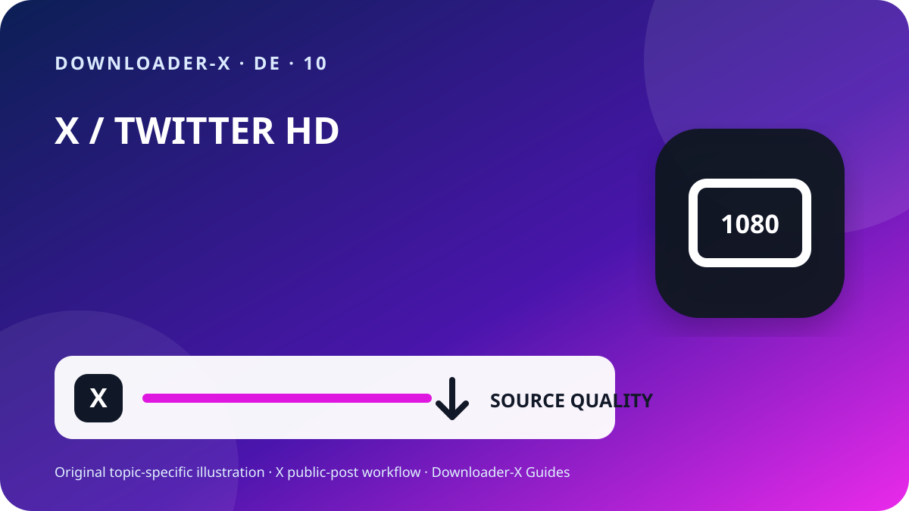

Kurzantwort
x clips herunterladen 1080p — Öffnen Sie den einzelnen X-Beitrag mit dem Video, bestätigen Sie die öffentliche Sichtbarkeit und kopieren Sie über Teilen den Beitragslink. Fügen Sie diese URL in Downloader-X ein, wählen Sie eine MP4-Variante, die im Ergebnis wirklich angezeigt wird, und spielen Sie nach dem Speichern Anfang, Mitte und Ende ab. Nutzen Sie den Ablauf nur für eigene Videos, passend lizenzierte Medien oder Inhalte mit klarer Erlaubnis. Ein öffentlicher Link erfordert weder X-Passwort noch Bestätigungscode, Browser-Cookie oder Fernzugriff.

Drei Schritte mit Downloader-X
- Der Eingabelink muss einen einzelnen Beitrag mit dem Video bezeichnen. Öffnen Sie in X das Teilen-Menü, kopieren Sie den Link zum Beitrag und testen Sie ihn einmal in einem neuen Tab. Profil- und Timeline-Adressen enthalten mehrere Beiträge und bestimmen das Zielmedium nicht. Diese kurze Kontrolle trennt eine falsche URL von einem Dienstfehler und verhindert wiederholte Klicks, die unvollständige oder doppelte Dateien erzeugen.
- Fügen Sie die geprüfte URL in den X-Downloader ein und starten Sie die Verarbeitung einmal. Warten Sie auf die tatsächlichen Optionen und vergleichen Sie Titel oder Vorschau mit dem Originalbeitrag. Wählen Sie ausschließlich Formate und Auflösungen, die im Ergebnis wirklich erscheinen. Eine Werbeaussage zu 4K, 1080p oder Wasserzeichenfreiheit ist kein Beleg, wenn die Quelle diese Variante nicht liefert. Bei einem Fehler sollte eine klare Meldung erscheinen; eine HTML-Seite, ein Installationsprogramm oder eine falsche Datei darf nicht als erfolgreiches Video ausgegeben werden.
- Der Vorgang ist erst abgeschlossen, wenn sich die Datei als echtes Video öffnen lässt, nicht wenn nur der Fortschrittsbalken verschwindet. Prüfen Sie vor Archivierung oder Weitergabe:
Was diese Suche bedeutet
x clips herunterladen 1080p. Nur öffentliche Beiträge. Format und Qualität hängen von den tatsächlich verfügbaren Quelloptionen ab.
4. HD nach Quelle und Zweck auswählen
Eine HD-Bezeichnung ist nur belastbar, wenn sie zu einer wirklich verfügbaren Medienvariante des öffentlichen Beitrags gehört. Für Smartphones und Laptops bietet 720p häufig ein gutes Verhältnis aus Schärfe, Datenmenge und Speicherbedarf. 1080p eignet sich für größere Displays, sofern die Quelle diese Auflösung tatsächlich bereitstellt. Dateien gleicher Auflösung können sich durch Bitrate, Codec und Kompression unterscheiden; spielen Sie sie deshalb ab und beurteilen Sie nicht nur den Namen. Wenn Ton erforderlich ist, wählen Sie eine kombinierte Video-und-Audio-Option und prüfen Sie die Spur direkt nach dem Speichern.
6. Gespeicherte Datei verifizieren
Der Vorgang ist erst abgeschlossen, wenn sich die Datei als echtes Video öffnen lässt, nicht wenn nur der Fortschrittsbalken verschwindet. Prüfen Sie vor Archivierung oder Weitergabe:
Der Dateityp entspricht der Auswahl, etwa MP4, und ist weder HTML noch Installer.
Die Größe ist nicht null und passt ungefähr zu Dauer und Qualität.
Anfang, Mitte und Ende geben Bild, Laufzeit und Ton korrekt wieder.
Dateiname, Ordner, Quell-URL und Erlaubnis sind dokumentiert.
5. Auf iPhone, Android, Windows oder Mac speichern
Auf iPhone und iPad liegen Safari-Downloads meist in der Dateien-App im Ordner Downloads oder am eingestellten Speicherort. Unter Android prüfen Sie die Browser-Downloads oder die Files-App. Unter Windows, macOS, Linux und ChromeOS sehen Sie zuerst in den Downloadordner und den Browserverlauf, bevor Sie erneut klicken. Bei wenig Speicher löschen Sie unnötige Kopien oder wählen eine niedrigere Auflösung. Installieren Sie keinen unbekannten Download-Manager, nur weil eine Seite ihn als Pflicht bezeichnet.
Quelle vor langfristiger Ablage dokumentieren
Bei Projekten mit mehreren Clips notieren Sie Konto, Beitragsdatum, permanente URL, kurze Beschreibung, gewählte Variante, Dateigröße und Rechtsgrundlage. So entstehen keine Dateien ohne Herkunft und Attribution oder Lizenz lassen sich später prüfen. Bei Zitaten, Antworten oder Threads kopieren Sie die URL des Beitrags, der das Video tatsächlich enthält, nicht nur die Adresse eines Beitrags, der darauf verweist.
Fehler von der Quelle bis zur Datei eingrenzen
Gehen Sie zum Videobeitrag zurück und kopieren Sie über Teilen; ein Profil bezeichnet kein einzelnes Medium.
Der Inhalt kann geschützt oder beschränkt sein. Geben Sie keine Zugangsdaten oder Cookies weiter und fordern Sie eine autorisierte Kopie an.
Prüfen Sie, ob der Beitrag existiert, ein natives Video enthält und über die kopierte URL öffnet; aktualisieren Sie einmal.
Löschen Sie die Datei, ändern Sie nicht die Endung und prüfen Sie URL und echte Videooption erneut.
Kontrollieren Sie Quelle, Gerätestärke und einen anderen vertrauenswürdigen Player; wählen Sie bei Bedarf eine kombinierte Variante.
Sicherheit und Datenschutz
Ein Ablauf für öffentliche Links benötigt kein X-Passwort, keinen Zwei-Faktor-Code, keine exportierten Cookies, keinen Fernzugriff, keine ausführbare Installationsdatei und kein Abschalten des Geräteschutzes. Beenden Sie den Vorgang bei .exe, .dmg oder einer fachfremden Browser-Erweiterung. Prüfen Sie Domain, Dateityp und Herkunft vor dem Öffnen. Auf gemeinsam genutzten Geräten verschieben Sie autorisierte Dateien aus öffentlichen Ordnern und löschen unnötige temporäre Kopien.
1. Öffentlichen Zugriff und Nutzungsrecht prüfen
Beginnen Sie beim Originalbeitrag und nicht bei einem Profil, Suchergebnis, Screenshot oder weitergeleiteten Vorschaubild. Öffnen Sie die URL in einem neuen Tab und vergleichen Sie Konto, Text, Vorschaubild und Dauer. Öffentliche Sichtbarkeit ist eine Zugriffseinstellung und erlaubt nicht automatisch erneutes Veröffentlichen, Bearbeiten, Verkaufen oder Werbenutzung. Ist das Konto geschützt, der Beitrag gelöscht, ein Sonderzugang nötig oder der Inhalt beschränkt, brechen Sie ab und bitten Sie den Rechteinhaber um eine autorisierte Kopie, statt die Kontrolle zu umgehen.
Öffentliche Sichtbarkeit ist keine Nutzungslizenz. Speichern Sie eigene Videos, kompatibel lizenzierte Medien oder Inhalte mit eindeutiger Genehmigung. Für Wiederveröffentlichung, Bearbeitung oder kommerzielle Nutzung muss die Erlaubnis diesen Zweck abdecken; bewahren Sie einen schriftlichen Nachweis auf. Respektieren Sie abgebildete Personen, private Informationen, sensible Orte und Minderjährige und geben Sie fremde Arbeit nicht als eigene aus.
2. Die genaue Beitrags-URL kopieren
Der Eingabelink muss einen einzelnen Beitrag mit dem Video bezeichnen. Öffnen Sie in X das Teilen-Menü, kopieren Sie den Link zum Beitrag und testen Sie ihn einmal in einem neuen Tab. Profil- und Timeline-Adressen enthalten mehrere Beiträge und bestimmen das Zielmedium nicht. Diese kurze Kontrolle trennt eine falsche URL von einem Dienstfehler und verhindert wiederholte Klicks, die unvollständige oder doppelte Dateien erzeugen.
Öffnen Sie den ursprünglichen Videobeitrag als einzelne Seite.
Kopieren Sie den Link über Teilen, statt die URL manuell einzugeben.
Prüfen Sie x.com oder twitter.com und eine echte Beitragsadresse.
Öffnen Sie einen neuen Tab und vergleichen Sie Konto, Text, Vorschau und Video.
Bewahren Sie Quell-URL und Erlaubnisnachweis bei der Datei auf.
3. Link einfügen und nur echte Ergebnisse wählen
Fügen Sie die geprüfte URL in den X-Downloader ein und starten Sie die Verarbeitung einmal. Warten Sie auf die tatsächlichen Optionen und vergleichen Sie Titel oder Vorschau mit dem Originalbeitrag. Wählen Sie ausschließlich Formate und Auflösungen, die im Ergebnis wirklich erscheinen. Eine Werbeaussage zu 4K, 1080p oder Wasserzeichenfreiheit ist kein Beleg, wenn die Quelle diese Variante nicht liefert. Bei einem Fehler sollte eine klare Meldung erscheinen; eine HTML-Seite, ein Installationsprogramm oder eine falsche Datei darf nicht als erfolgreiches Video ausgegeben werden.
Dateien organisieren und Duplikate vermeiden
Ein sinnvoller Name enthält ein kurzes Thema, Konto, Datum und Qualität, zum Beispiel topic_creator_2026-08-30_720p.mp4. Trennen Sie temporäre und geprüfte Ordner und behalten Sie nur benötigte Varianten. Mehrfaches Klicken verbessert die Qualität nicht, sondern erzeugt häufig Duplikate oder Teilstücke. Speichern Sie Quell-URL, Attribution und Nutzungsbedingungen in einer Notiz oder Tabelle des Projekts.
Abschließende 60-Sekunden-Checkliste
Der Dienst verlangt weder Zugangsdaten noch Cookies.
Die gewählte Qualität steht im echten Ergebnis.
Die spätere Nutzung bleibt innerhalb der Erlaubnis.
Prüfungen gegen falsche Ergebnisse
Praktischer X-Leitfaden · 1
Die spätere Nutzung bleibt innerhalb der Erlaubnis.
Ein Ablauf für öffentliche Links benötigt kein X-Passwort, keinen Zwei-Faktor-Code, keine exportierten Cookies, keinen Fernzugriff, keine ausführbare Installationsdatei und kein Abschalten des Geräteschutzes. Beenden Sie den Vorgang bei .exe, .dmg oder einer fachfremden Browser-Erweiterung. Prüfen Sie Domain, Dateityp und Herkunft vor dem Öffnen. Auf gemeinsam genutzten Geräten verschieben Sie autorisierte Dateien aus öffentlichen Ordnern und löschen unnötige temporäre Kopien.
Löschen Sie sie, benennen Sie sie nicht um und prüfen Sie URL und Videooption erneut.
Kontrollieren Sie Quelle, Gerätestärke und einen anderen vertrauenswürdigen Player; wählen Sie bei Bedarf eine kombinierte Variante.
Praktischer X-Leitfaden · 2
Nein. Sie benötigen eine Lizenz oder Erlaubnis für Weiterverteilung und geplanten Zweck.
Anfang, Mitte und Ende geben Bild, Laufzeit und Ton korrekt wieder.
Löschen Sie die Datei, ändern Sie nicht die Endung und prüfen Sie URL und echte Videooption erneut.
Prüfen Sie, ob der Beitrag existiert, ein natives Video enthält und über die kopierte URL öffnet; aktualisieren Sie einmal.
Praktischer X-Leitfaden · 3
Öffentliche Sichtbarkeit ist keine Nutzungslizenz. Speichern Sie eigene Videos, kompatibel lizenzierte Medien oder Inhalte mit eindeutiger Genehmigung. Für Wiederveröffentlichung, Bearbeitung oder kommerzielle Nutzung muss die Erlaubnis diesen Zweck abdecken; bewahren Sie einen schriftlichen Nachweis auf. Respektieren Sie abgebildete Personen, private Informationen, sensible Orte und Minderjährige und geben Sie fremde Arbeit nicht als eigene aus.
Ja, wenn beide zum selben öffentlichen Beitrag führen und das Ziel geprüft wurde.
Fügen Sie die geprüfte URL in den X-Downloader ein und starten Sie die Verarbeitung einmal. Warten Sie auf die tatsächlichen Optionen und vergleichen Sie Titel oder Vorschau mit dem Originalbeitrag. Wählen Sie ausschließlich Formate und Auflösungen, die im Ergebnis wirklich erscheinen. Eine Werbeaussage zu 4K, 1080p oder Wasserzeichenfreiheit ist kein Beleg, wenn die Quelle diese Variante nicht liefert. Bei einem Fehler sollte eine klare Meldung erscheinen; eine HTML-Seite, ein Installationsprogramm oder eine falsche Datei darf nicht als erfolgreiches Video ausgegeben werden.
Häufig gestellte Fragen
x clips herunterladen 1080p?
Nur öffentliche Beiträge. Format und Qualität hängen von den tatsächlich verfügbaren Quelloptionen ab.
Funktionieren x.com- und twitter.com-Links?
Ja, wenn beide zum selben öffentlichen Beitrag führen und das Ziel geprüft wurde.
Was tun bei einer HTML-Datei?
Löschen Sie sie, benennen Sie sie nicht um und prüfen Sie URL und Videooption erneut.
Warum ist 1080p nicht immer verfügbar?
Die Auflösung hängt von der Quelldatei und den tatsächlich verfügbaren Varianten ab.
Kann man aus einem geschützten Konto herunterladen?
Nein. Diese Anleitung gilt nur für öffentliche Beiträge und umgeht keine Beschränkung.
Verwandte X-Anleitungen
Den exakten Link des öffentlichen Beitrags verwenden
Nur öffentliche Beiträge. Format und Qualität hängen von den tatsächlich verfügbaren Quelloptionen ab.
Downloader-X öffnen